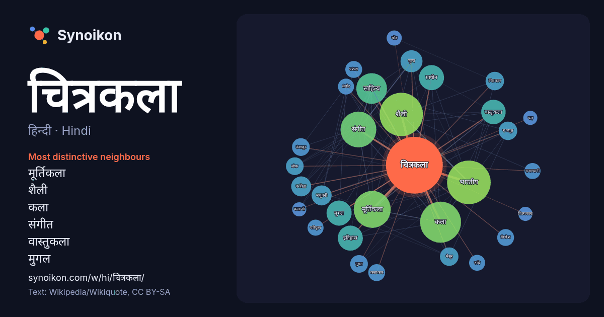

हिन्दी · Hindi · popular word
चित्रकला
“painting” · The words found around it in 746 instances from Hindi Wikipedia, Wikiquote.

Most distinctive neighbours
- मूर्तिकला 46×
- शैली 36×
- कला 31×
- संगीत 20×
- वास्तुकला 19×
- मुगल 19×
- साहित्य 16×
- भारतीय 15×
- मधुबनी 15×
- चित्रकार 12×
- मैसूर 12×
- तंजावुर 12×
- राजपूत 11×
- मुग़ल 11×
- नृत्य 11×
- पिथोरा 11×
- कविता 10×
- प्राचीन 10×
- इतिहास 9.9×
- तंजौर 9.9×
× = how many times more often than in general Hindi Wikipedia text.
Most frequent neighbours
- भारतीय 67
- शैली 66
- कला 59
- मूर्तिकला 48
- संगीत 45
- साहित्य 33
- भारत 24
- इतिहास 22
- प्राचीन 22
- मुगल 22
- वास्तुकला 21
- प्रमुख 19
- नृत्य 17
- शिक्षा 15
- कविता 14
- क्षेत्र 14
- मधुबनी 14
- जिसमें 13
- प्रसिद्ध 13
- आधुनिक 12
In context
- चित्रकला एक द्विआयामीय कला है। भारत में चित्रकला का एक प्राचीन स्रोत विष्णुधर्मोत्तर पुराण है। चित्रकला का प्रचार चीन, मिस्र, भारत आदि देशों में अत्यंत Wikipedia snippets · चित्रकला
- यह स्पष्ट है कि भारत में एक कला के रूप में ‘चित्रकला’ बहुत प्राचीन काल से प्रचलित रही है। भारत में चित्रकला और कला का इतिहास मध्यप्रदेश की भीमबेटका गुफाओं Wikipedia snippets · भारतीय चित्रकला
- मधुबनी चित्रकला, जिसे मिथिला चित्रकला भी कहते हैं, बिहार के मिथिला क्षेत्र की एक प्रमुख कला परंपरा है। यह चित्रकला मुख्य रूप से महिलाओं द्वारा बनाई जाती Wikipedia snippets · मधुबनी चित्रकला
- आधुनिक चित्रकला का आविर्भाव इस परंपरा से हटकर हुआ है। आधुनिक भारतीय चित्रकला का इतिहास केरल से प्रारंभ होता है। राजा रविवर्मा आधुनिक भारतीय चित्रकला के जनक Wikipedia snippets · केरल की चित्रकला
- पहाड़ी चित्रकला एक प्रमुख भारतीय चित्रकला शैली हैं। . विद्वानों के अनुसार जम्मू और कश्मीर प्रदेश में स्थित बसोहली पहाड़ी शैली को विकास का पालन कहा जाता Wikipedia snippets · पहाड़ी चित्रकला शैली
- तरह चित्रकला का भी। तैमूर के वंशजों के युग में चित्रकला प्रगति को प्राप्त हुई पर सफावी युग में उसकी उन्नति रुक सी गई। 14वीं सदी की ईरानी चित्रकला को मंगोल Wikipedia snippets · ईरानी चित्रकला
- थांका चित्रकला (नेपाल भाषा : पौभा किपा) नेपाली तथा तिब्बती संस्कृति की अनुपम मिसाल है। इस के माध्यम से तिब्बती धर्म, संस्कृति एवं दार्शनिक मूल्यों को अभिव्यक्त Wikipedia snippets · थांका चित्रकला
- पिथोरा चित्रकला एक प्रकार की चित्रकला है। जो भील जनजाति के सबसे बड़े त्यौहार पिठौरा पर घर की दीवारों पर बनायी जाती है।मध्य प्रदेश के पिथोरा क्षेत्र मे Wikipedia snippets · पिथोरा चित्रकला
More Hindi words
- इतिहास
- ईश्वर
- कार्य
- कुत्ता
- गर्मी
- गाना
- घंटी
- घड़ी
- घोड़ा
- चाय
- छाया
- जंगल
- जलवायु
- जीवन
- तूफ़ान
- दर्पण
- द्वीप
- नक्षत्र
- नमक
- परिवार
- पहाड़
- पानी
- पैसा
- प्रकृति
- बगीचा
- बिल्ली
- भाषा
- भोजन
- माता
- मानचित्र
- मृत्यु
- मौन
- रेगिस्तान
- रेलगाड़ी
- रोटी
- वर्षा
- विज्ञान
- शक्ति
- शरद
- शहद
- शहर
- सड़क
- सत्य
- समय
- सर्दी
- सेतु
- स्वर्ण
- स्वास्थ्य
- हृदय
Precomputed on 2026-10-09 with default settings (±5 words, medium corpus). The interactive map can refresh it with live data.